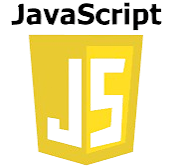
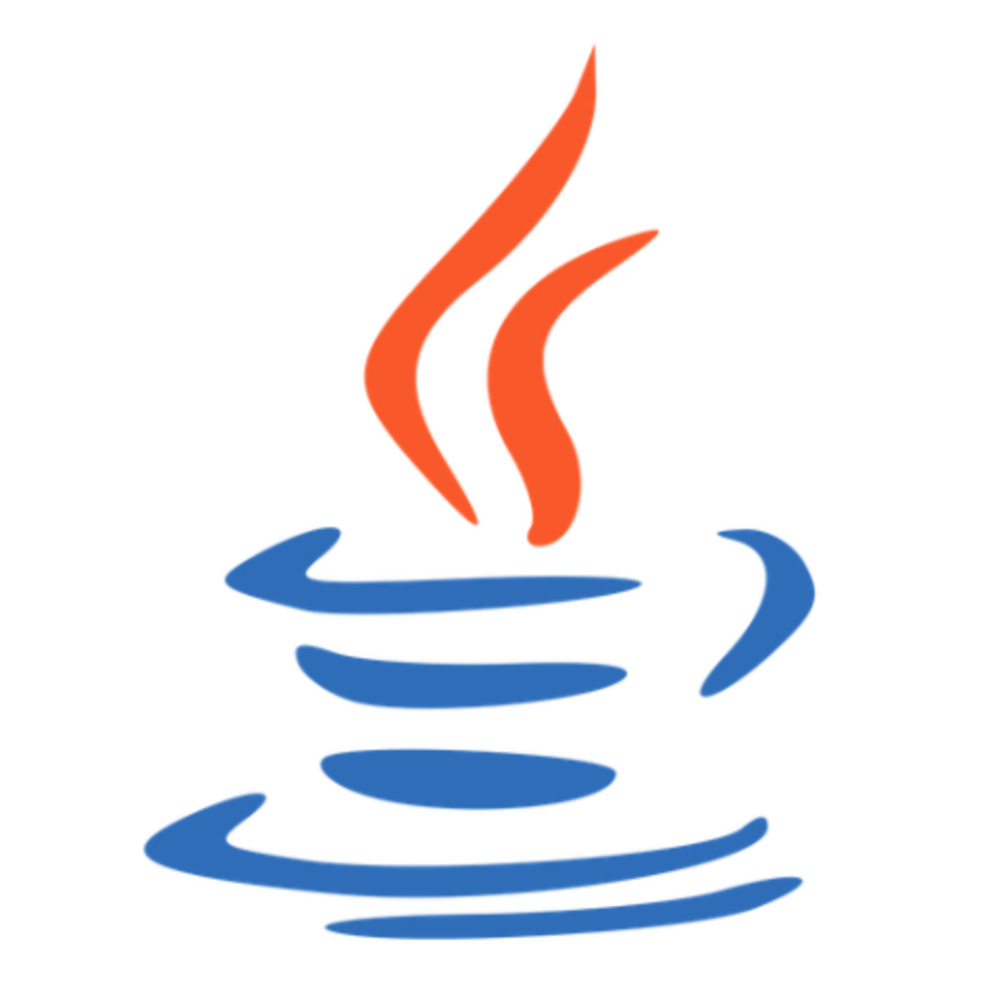
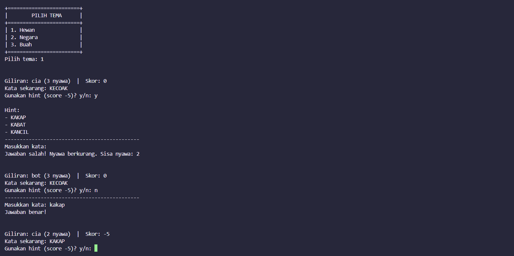
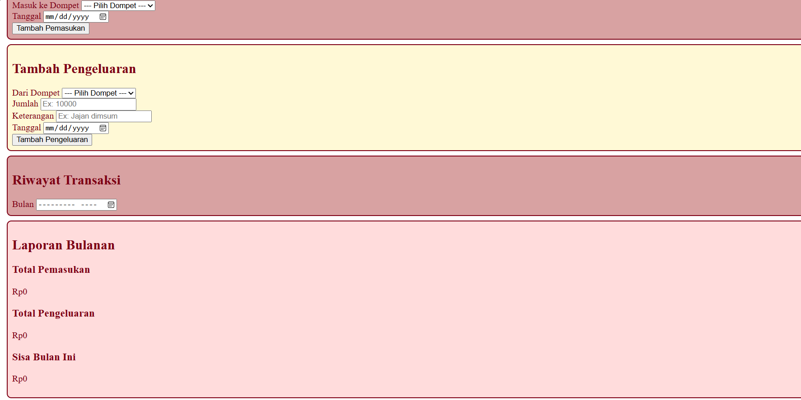

Tentang Saya
Halo! Saya Velicia, mahasiswi teknik informatika
Saat ini, saya sedang mempelajari berbagai dasar pengembangan perangkat lunak, termasuk HTML, CSS,
JavaScript, Java, Python, dan C. Saya memiliki ketertarikan khusus pada pengembangan front-end dan UI/UX
karena saya senang mempelajari bagaimana sebuah website dirancang agar memiliki tampilan yang menarik,
terstruktur, dan mudah digunakan.
Keahlian Saya

HTML & CSS
Menengah (60%)
JavaScript
Bawah (35%)
Python
Menengah Atas (70%)
Java
Bawah (35%)
C
Bawah (40%)Proyek Saya

Word Chain Game
Permainan tebak kata berantai berbasis terminal yang memungkinkan pemain bergantian menebak kata berdasarkan kata sebelumnya. Program ini dilengkapi dengan sistem giliran, skor, jumlah nyawa, dan fitur petunjuk yang memberikan pengalaman bermain interaktif melalui terminal.

Money Management
Website pencatatan keuangan pribadi yang sedang dikembangkan untuk membantu pengguna mencatat pemasukan dan pengeluaran berdasarkan dompet serta memantau saldo. Proyek ini merupakan bagian dari proses pembelajaran pengembangan web menggunakan HTML, CSS, dan JavaScript.